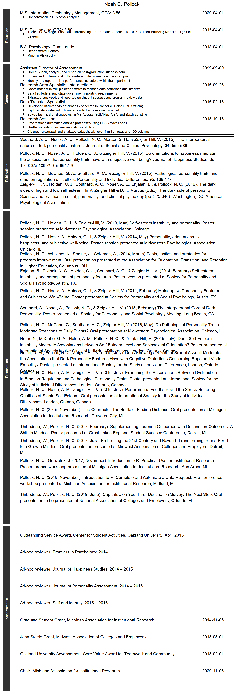

“If you understood everything I said, you’d be me.”
-Miles Davis
Professional
I’m excited about Data: extracting, processing, analyzing, reporting, dashboarding, and everything in between. Since 2017, R has been my tool of choice. Nevertheless, I have experience with a variety of software, programming languages, and IT project types. You can learn more about my work via the following resources:
Personal
I enjoy problem solving, cards, board-games, yard-games, cooking, eating, creating (both physically with wood and digitally with CAD), skiing, spending time with my family, and pushing my physical limits while exploring via cycling.

My first organized cycling event! Zoo-De-Mack, a 51 mile roll from Boyne Highlands Resort to Mackinaw City.
A business card holder I designed and 3D printed. Special thanks to the Oakland University Makerspace for printing!
Me my wife and our dogs camping. It was our dogs’ first time at the beach.
Fun with My CV
Mostly for fun, I also recreated pieces of my CV in different formats. Although, they’re not all practical and may be hardly legible (e.g., ggplot2 CV needs a lot of work).
Dashboard
Education
B.A. Psychology, Cum Laude
M.S. Psychology
M.S. Information Technology Management
Skillset Refined through Work Experience
Presentations
Total Presentations
17
ggplot2
It’s not practical and it needs some work (e.g., vertical spacing adjustments), but I hope it conveys my passion (obsession?) for coding in R.
First, I read in a CSV file containing some examples from my CV. I reshape and mutate the file in a few ways to make it easier to plot. For example, I add line breaks via str_wrap() and then I adjust the vertical width of points depending on the number of lines wrapped.
line_length <- 110
cv_df <- read.csv('cv_df.csv',
stringsAsFactors = FALSE,
na.strings = "") %>%
filter(include == TRUE) %>%
# arrange section the order it appears in dataframe
mutate(section = factor(section, levels = unique(section)),
date_end = as.Date(date_end),
month = lubridate::month(date_end
,label=TRUE
,abbr=FALSE),
year = lubridate::year(date_end)) %>%
mutate_at(.vars = vars(experience, point_1, point_2, point_3),
.funs = funs(stringr::str_wrap(.,width=line_length))) %>%
group_by(section)
cv_df <- cv_df %>%
#adjust for number of lines
inner_join(cv_df %>%
gather(line_type,text,-section,-date_start,-date_end,-month,-year) %>%
filter(!is.na(text)) %>%
summarise(wraps = sum(floor(nchar(text)/line_length)),
n = n()),
by = "section") %>%
# adjust for wrapped text adding new lines
# need to do better and evenly space each cluster of lines
mutate(y = 1:n()*10+wraps,
y_point_1 = ifelse(is.na(point_1),NA,y),
y_point_2 = ifelse(is.na(point_2),NA,y),
y_point_3 = ifelse(is.na(point_3),NA,y))
ggplot(cv_df,aes(x=1,y=y)) +
geom_text(aes(label=experience),hjust=0) +
geom_text(aes(label=date_end,x=250),hjust=1) +
#bullets
geom_point(aes(x=5,y=y_point_1-2.5)) +
geom_text(aes(label=point_1,x=10,y=y-2.5),hjust=0,size=3) +
geom_point(aes(x=5,y=y_point_2-5)) +
geom_text(aes(label=point_2,x=10,y=y-5),hjust=0,size=3) +
geom_point(aes(x=5,y=y_point_3-7.5)) +
geom_text(aes(label=point_3,x=10,y=y-7.5),hjust=0,size=3) +
# to stretch canvas
geom_point(aes(y=y+(line_length/10/n)),color="transparent") +
# sections
facet_grid(section~.,switch = 'y',scales = 'free_y',space = "free_y") +
scale_x_continuous(limits = c(1,250)) +
ggtitle("Noah C. Pollock") +
theme(panel.background = element_blank(),
panel.border = element_rect(color='black',fill=NA),
panel.grid.major.y = element_blank(),
panel.grid.minor.y = element_blank(),
axis.line = element_blank(),
axis.text = element_blank(),
axis.ticks = element_blank(),
axis.title = element_blank(),
strip.background = element_rect(colour="#323232", fill='#323232'),
strip.text = element_text(color="white"),
plot.title = element_text(hjust = 0.5))